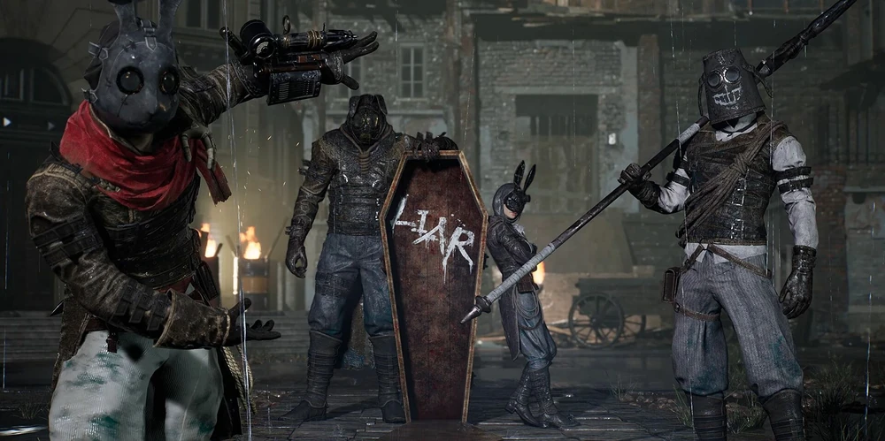

Eldest of the Black Rabbit Brotherhood
The Malum District Syndicate
The colossal leader of a notorious Stalker gang ruling the slums of Krat. Wielding a massive buster sword, the Eldest fights with brutal, sweeping strikes, while his younger siblings routinely jump into the arena to turn the fight into a chaotic brawl.
Combat Tips
Focus entirely on the Eldest. When his health drops by a quarter, a sibling jumps in. Back away immediately and lure the sibling away from the Eldest. The Eldest will mostly hang back and watch while you fight the sibling, only occasionally charging. Defeat the sibling quickly, then return to the Eldest.
Combat Stats
- Type: Human (Stalker)
- Weakness: Acid
- Resistance: None
- Location: Malum District Town Hall
- Summon: Specter highly recommended for crowd control
- Drop: Resplendent Ergo, Taunt Gesture
The Brotherhood Siblings
Youngest
Twin DaggersExtremely fast and agile. She constantly dashes around applying Decay. Parry her rapid combos to break her daggers and reduce her threat.
Eccentric
Bucket SpearUnpredictable lunges and wide sweeps. His attacks cover a lot of ground, but he is easily staggered by heavy counter-attacks.
Battle Maniac
Dual Swords / Puppet StringUses a grappling hook to pull you in from across the arena. Keep moving sideways when you see him winding up his string arm.
Eldest (Core)
GreatswordThe main health bar of the fight. Breaking his weapon through Perfect Guards makes his massive swings deal significantly less damage.